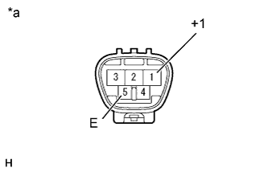
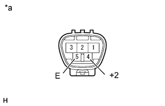
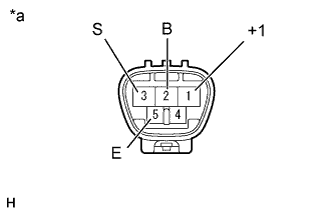

FRONT WIPER MOTOR > INSPECTION |
| 1. INSPECT WINDSHIELD WIPER MOTOR ASSEMBLY |
Place matchmarks on the motor shaft and housing.
|  |
Check the LO operation.
Connect the positive (+) lead of the battery to terminal 1 (+1) and the negative (-) lead to terminal 5 (E), and then check that the motor operates at low speed (LO).
| *a | Component without harness connected (Windshield Wiper Motor Assembly) |
|  |
Check the HI operation.
Connect the positive (+) lead of the battery to terminal 4 (+2) and the negative (-) lead to terminal 5 (E), and then check that the motor operates at high speed (HI).
| *a | Component without harness connected (Windshield Wiper Motor Assembly) |
|  |
Check the automatic stop operation.
Connect the positive (+) lead of the battery to terminal 1 (+1) and the negative (-) lead to terminal 5 (E). With the motor operating at low speed (LO), disconnect terminal 1 (+1) to stop the wiper motor operation at any position other than the automatic stop position.
Using SST, connect terminals 3 (S) and 1 (+1). Then connect the positive (+) lead of the battery to terminal 2 (B) and the negative (-) lead to terminal 5 (E) to restart the motor operation at low speed (LO).
Check that the motor stops automatically at the position where the matchmarks align.
| *a | Component without harness connected (Windshield Wiper Motor Assembly) |